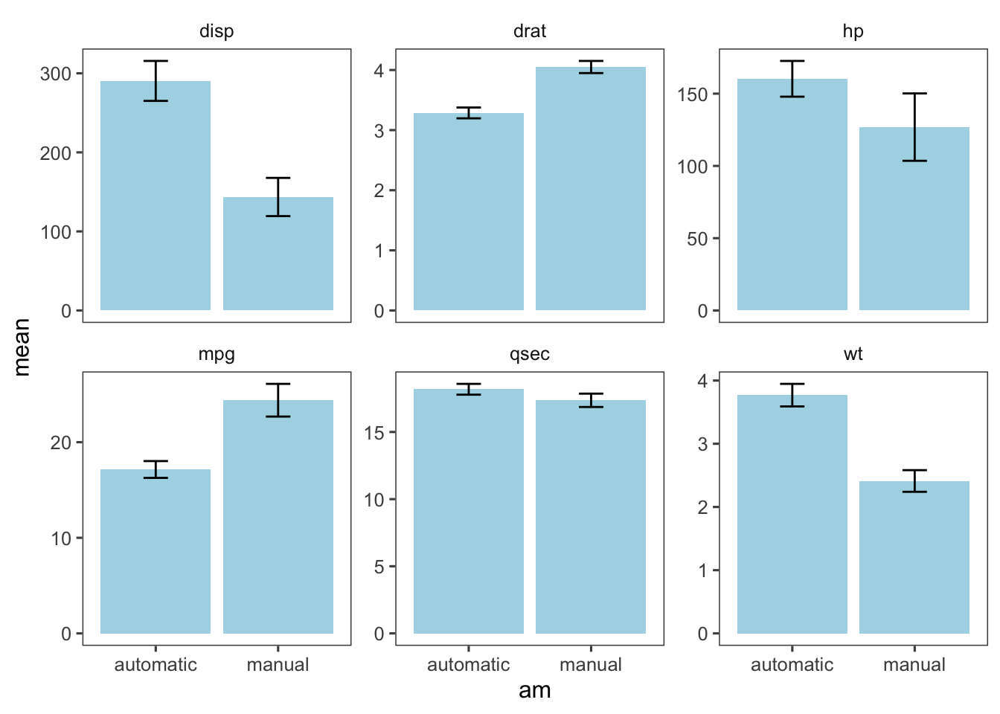

knitr::opts_chunk$set(echo = T)
library(tidyverse)Overview
Today we’re going to discuss functional programming in R.
As discussed in the functions lecture, most R tasks are built around using a function to perform operations.
We’ll discuss how to use functions when working with a dataset, iteration, and the purrr package.
across()
We’ve discussed across() before, but we’ll go over it again because it is a helpful tool when programming with functions.
Imagine you want to compute the standard error for each numerical variable in your variable. In our case, we’ll be working with the mtcars data.
mtcars1 <- mtcars %>%
mutate(across(c(cyl,vs,am,gear,carb),as.factor))First, we write a function to do so.
compute_se <- function(x){
n <- length(x)
se <- sd(x)/sqrt(n)
return(se)
}We could run an operation like this:
mtcars1 %>%
summarise(
se_mpg=compute_se(mpg),
se_disp=compute_se(disp),
se_hp=compute_se(hp),
se_drat=compute_se(drat),
se_wt=compute_se(wt),
se_qsec=compute_se(qsec)
)However, there’s a way to be more efficient with our code, using across().
We can use the selection helper where() to select all numeric variables, using the function is.numeric().
mtcars1 %>%
summarise(across(where(is.numeric),compute_se))We can even run multiple functions at once by wrapping them in a list().
mtcars_summary <- mtcars1 %>%
summarise(across(where(is.numeric),list(mean=mean,se=compute_se)))
mtcars_summaryNow, imagine this in a data pipeline, going from summary -> pivoting -> visualization. Say you want to visualize the mean and se for each numeric variable, split by am (automatic vs. manual transmission). This can be easily done using a data pipeline beginning with summarise(across()).
First, we recode am to have more informative labels. Then we compute mean and se for each transmission type.
Next, we do some data manipulation so each row is a distinct transmission type and variable, and then we compute the lower and upper ends of our error bars by subtracting and adding se from mean, respectively.
Finally, we make a plot using ggplot.
mtcars1 %>%
mutate(am=recode(am,`0`="automatic",`1`="manual")) %>%
group_by(am) %>%
summarise(across(where(is.numeric),list(mean=mean,se=compute_se))) %>%
ungroup() %>%
pivot_longer(-am) %>%
separate(name,into=c("variable","stat")) %>%
pivot_wider(names_from = stat,values_from = value) %>%
mutate(se_lower=mean-se,se_upper=mean+se) %>%
ggplot(aes(am,mean))+
geom_col(position="dodge",fill="lightblue")+
geom_errorbar(aes(ymin=se_lower,ymax=se_upper),width=.2)+
facet_wrap(vars(variable),scales="free_y")+
ggthemes::theme_few()
Note that we did all of this without copy and pasting code, writing for loops, or making separate dataframes for each variable we summarized.
For loops
If you’ve programmed in other languages, you’re probably very familiar with for loops.
For loops are a way to perform an operation on each discrete element of a set of data.
Below, I demonstrate how for loops work in R, computing a z-scorefor each value in a numeric variable.
I take a sample of size n (n=100 in our case) from a normal distribution, using the rnorm() function.
Then, I initiate a numeric vector of size n called xz .
Finally, a compute a z-score for each element i in x, by subtracting the mean of x from x[i] and dividing by the sd of x.
n <- 100
x <- rnorm(n)
xz <- numeric(n)
for(i in seq_len(n)){
xz[i] <- (x[i]-mean(x))/sd(x)
}
head(xz)[1] -1.2936301 2.4775659 0.5575291 -0.9882565 1.6102698 -2.6284810mean(xz) # should be very close to 0[1] 2.371801e-17You may be very familiar with for loops. Indeed, you may have coded in languages where a for loop is the only way to perform an operation like this.
However, for loops are not always necessary in R due to R’s emphasis on vectorized functions - functions that automatically perform an operation on each element of a vector.
I demonstrate this below:
compute_z <- function(x){
z <- (x-mean(x))/sd(x)
return(z)
}
n <- 100
x1 <- rnorm(n)
x1z <- compute_z(x1)
head(x1z)[1] -0.4312997 -0.2697905 0.3871747 0.9597387 0.1998592 -0.5565453Indeed, the compute_z() function automatically does this for us.
There are indeed situations where a for loop is needed. However, the purrr package can often be a great substitute.
purrr
The purrr package is used to iterate over multiple objects, much like a for loop. However, the syntax is more succinct, more readable, and purrr is often faster.
Imagine you want to take 50 samples of size 100 from a normal distribution, each with a different mean. We can easily do so with purrr’s map() functions. We first specify the elements we’re iterating over, means, then we specify the function we are using, rnorm(), then specifying any other arguments the function needs (n).
means <- seq(10,59,1)
n <- 100
samps <- map(means, rnorm, n=100)purrr can also take a number of return types. That is, you can specify whether the function will return a dataframe, a vector of characters, etc. See this link for more details.
Conclusion
This has provided an introduction to functional programming in R. There’s plenty more to be said, but this demonstrates the way functions provide the backbone for most R operations.